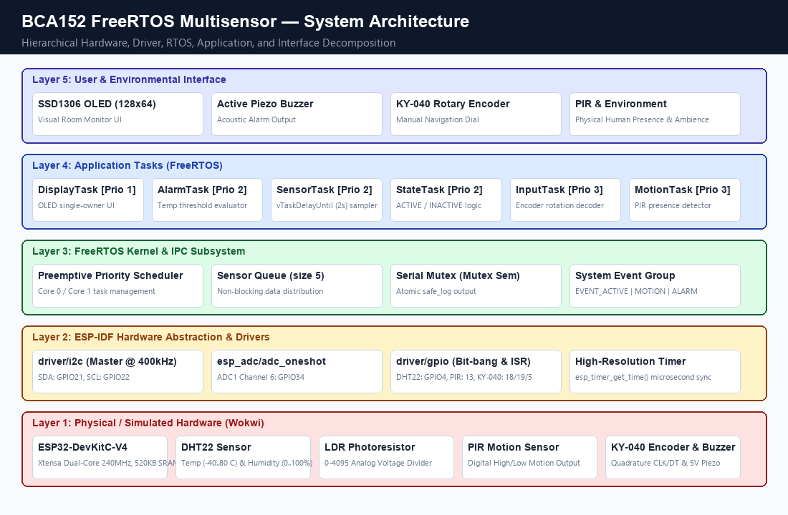
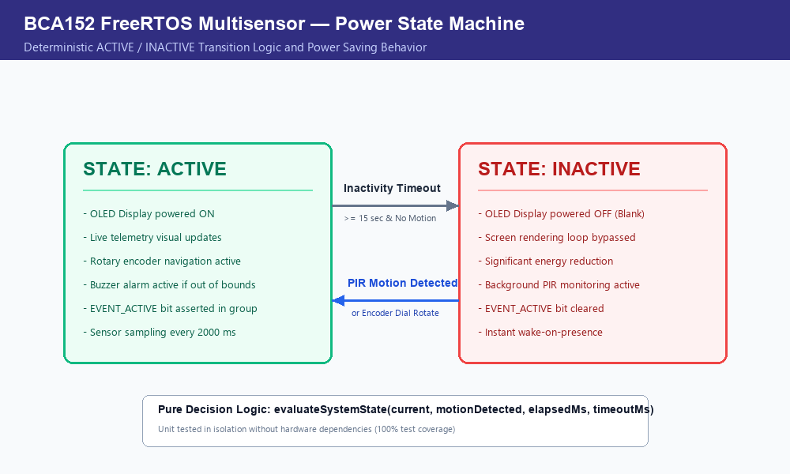
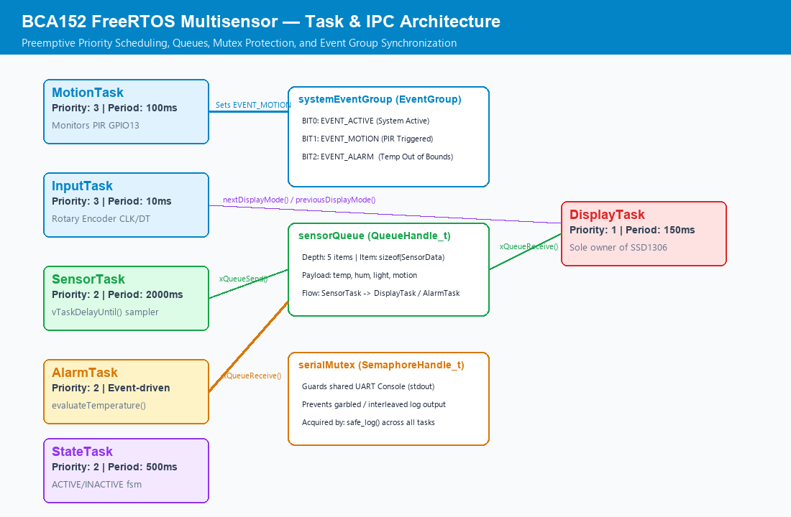

Traditional micro-controller applications often implement sensing, user input, and display logic inside a monolithic sequential superloop (void loop()). While straightforward for trivial single-device designs, this approach breaks down when multiple asynchronous physical events and timing requirements intersect. For instance, executing a blocking 2-second readout on a digital relative humidity sensor stalls the CPU, causing human rotary encoder twists to be skipped and delaying emergency temperature alarms.
The objective of this laboratory is to design, implement, and verify a concurrent embedded edge monitoring system from scratch on the ESP32 using the native Espressif IoT Development Framework (ESP-IDF) and FreeRTOS APIs. The system monitors ambient room parameters, provides tactile user navigation, triggers audio alerts on thermal violations, and enforces an occupancy-driven power management state machine.
The physical system was adapted to simulated embedded peripherals within the Wokwi environment:
The system employs a 5-layer modular software and hardware architecture, ensuring strict decoupling between physical drivers, operating system services, application logic, and user interfaces.

Subsystem Decomposition:
sensors.cpp): Implements microsecond-timed 1-wire bit-banging for the DHT22 and oneshot 12-bit ADC conversion for the LDR. Periodically packages measurements into a canonical SensorData structure.alarm.cpp): Evaluates ambient temperatures against safety limits (18.0 °C ≤ T ≤ 30.0 °C) and asserts acoustic transducer outputs.input.cpp): Decodes quadrature gray-code state transitions on encoder pins, debounces mechanical bounce, and transitions between menu views with wraparound.display.cpp): Acts as the sole owner of the I2C bus and SSD1306 controller, preventing bus arbitration collisions.system_state.cpp): Implements a finite state machine managing ACTIVE and INACTIVE power states based on PIR motion and inactivity timeouts.
State Machine Transitions:
INACTIVE, powering off the OLED screen (display_set_power(false)) to conserve energy and suppress I2C traffic while keeping background PIR monitoring active.ACTIVE state.The application executes six distinct FreeRTOS tasks configured with explicit priorities and synchronized via queues, mutexes, event groups, and interval delays:

| Task Name | Responsibility | Trigger / Period | Priority | IPC Mechanism | Typical Blocked Condition |
|---|---|---|---|---|---|
| MotionTask | PIR pin sampling & presence flag dispatch | 100 ms periodic | 3 | Event Group (EVENT_MOTION) |
vTaskDelay(pdMS_TO_TICKS(100)) |
| InputTask | Rotary encoder quadrature decoding & navigation | 10 ms periodic | 3 | Shared Mode / Notification | vTaskDelay(pdMS_TO_TICKS(10)) |
| SensorTask | DHT22 & LDR measurement acquisition | 2000 ms periodic | 2 | Queue (sensorQueue) |
vTaskDelayUntil(&lastWake, 2000ms) |
| AlarmTask | Temperature evaluation & buzzer activation | Event-driven (Queue) | 2 | Queue (sensorQueue) |
xQueueReceive(sensorQueue, portMAX_DELAY) |
| StateTask | Inactivity tracking & state machine evaluation | 500 ms periodic | 2 | Event Group (EVENT_ACTIVE) |
vTaskDelay(pdMS_TO_TICKS(500)) |
| DisplayTask | SSD1306 OLED rendering (Sole Hardware Owner) | 150 ms periodic | 1 | Queue / Shared Cache | xQueueReceive() / vTaskDelay(150ms) |
Priorities in FreeRTOS represent scheduling urgency and deadline tolerance rather than abstract importance:
MotionTask and InputTask. Both interact directly with physical user phenomena (encoder clicks and PIR occupancy edges). If delayed by lower tasks, the CPU would miss quadrature state changes, resulting in dropped dial clicks and sluggish responsiveness.SensorTask, AlarmTask, and StateTask. SensorTask operates on a rigid 2.0 s cadence. AlarmTask runs immediately when a new telemetry packet is enqueued, evaluating hazards without starving interactive inputs.DisplayTask. Full-frame 128×64 pixel I2C transfers require several milliseconds. Because human visual perception cannot distinguish millisecond frame differences, DisplayTask runs in the background, preempted by any sensor or user event.vTaskDelayUntil() vs vTaskDelay()
Standard vTaskDelay(n) suspends the task for n ticks starting from the moment the function is invoked. If the sensor reading takes variable execution time Δtexec, the true elapsed cycle length expands to:
Over thousands of iterations, this introduces severe cumulative timing drift. In contrast, vTaskDelayUntil(&lastWakeTime, 2000ms) schedules the next wake tick relative to lastWakeTime:
This eliminates drift, ensuring a steady, deterministic 0.5 Hz telemetry sampling rate regardless of I/O latency.
sensorQueue): Sized for 5 SensorData structures. Avoids race conditions and memory corruption by cleanly decoupling the producer (SensorTask) from asynchronous consumers (AlarmTask, DisplayTask).serialMutex): Guards the shared UART stdout stream. Without mutex protection, concurrent tasks calling logging routines produce corrupted, interleaved console output.systemEventGroup): Manages atomic bit flags across modules (BIT0: EVENT_ACTIVE, BIT1: EVENT_MOTION, BIT2: EVENT_ALARM), allowing immediate reactive synchronization.Key design and architectural choices made during implementation:
evaluateTemperature, nextDisplayMode, previousDisplayMode, evaluateSystemState). These functions do not call hardware APIs, enabling 100% automated unit testing with Unity on host and target.DisplayTask was designed as the sole owner of the I2C bus; other tasks send data via queues or caches.pre_build_git_fix.py to pre-generate valid git-data markers in build directories before CMake configuration.
Thirteen automated unit tests were implemented in test/test_main.cpp, exercising all boundary and wraparound conditions:
| Test Function | Category | Stimulus / Input | Expected Output | Result |
|---|---|---|---|---|
test_temperature_below_low_limit |
Alarm Logic | 17.9 °C | AlarmState::LOW_TEMPERATURE |
PASS |
test_temperature_at_low_limit |
Alarm Logic | 18.0 °C (Boundary) | AlarmState::NORMAL |
PASS |
test_temperature_normal_mid |
Alarm Logic | 24.5 °C | AlarmState::NORMAL |
PASS |
test_temperature_at_high_limit |
Alarm Logic | 30.0 °C (Boundary) | AlarmState::NORMAL |
PASS |
test_temperature_above_high_limit |
Alarm Logic | 30.1 °C | AlarmState::HIGH_TEMPERATURE |
PASS |
test_navigation_forward_step |
Navigation | TEMPERATURE → CW |
DisplayMode::HUMIDITY |
PASS |
test_navigation_reverse_step |
Navigation | HUMIDITY → CCW |
DisplayMode::TEMPERATURE |
PASS |
test_navigation_forward_wraparound |
Navigation | MOTION → CW |
DisplayMode::TEMPERATURE (Wrap) |
PASS |
test_navigation_reverse_wraparound |
Navigation | TEMPERATURE → CCW |
DisplayMode::MOTION (Wrap) |
PASS |
test_system_state_active_no_timeout |
State Machine | ACTIVE, elapsed = 5000ms < 15000ms | SystemState::ACTIVE |
PASS |
test_system_state_active_timeout_reached |
State Machine | ACTIVE, elapsed = 15000ms ≥ 15000ms | SystemState::INACTIVE |
PASS |
test_system_state_inactive_no_motion |
State Machine | INACTIVE, no motion | SystemState::INACTIVE |
PASS |
test_system_state_inactive_motion_detected |
State Machine | INACTIVE, motion = true | SystemState::ACTIVE |
PASS |
Overall Unit Test Execution: 13 Tests, 0 Failures, 0 Ignored → 100% SUCCESS.
| Test ID | Requirement | Stimulus / Input | Expected Output | Actual Observed Output | Result |
|---|---|---|---|---|---|
| FT-01 | FR-01 | Adjust DHT22 temperature to 28.0 °C | OLED temperature updates to 28.0 °C | Screen rendered “28.0 C” within 2.0 s cycle | PASS |
| FT-02 | FR-02 | Adjust DHT22 humidity to 75.0 % | OLED humidity updates to 75.0 % | Screen rendered “75.0 %” accurately | PASS |
| FT-03 | FR-03 | Adjust LDR light slider | OLED light displays 0–100% | Linear scaling rendered (e.g. 74 %) | PASS |
| FT-04 | FR-06 | Rotate encoder clockwise | Next dashboard page is selected | Pages traversed: Temp → Hum → Light → Motion | PASS |
| FT-05 | FR-06 | Rotate encoder counter-clockwise | Previous page selected with wrap | Pages traversed in reverse with wraparound | PASS |
| FT-06 | FR-07 | Set temperature to 32.5 °C (> 30 °C) | Buzzer activates, OLED shows ALARM | Buzzer sounded continuously, OLED alerted | PASS |
| FT-07 | FR-07 | Return temperature to 24.5 °C | Buzzer silences, OLED shows NORMAL | Buzzer stopped immediately, status restored | PASS |
| FT-08 | FR-04 | Trigger simulated PIR motion | EVENT_MOTION asserted, ACTIVE confirmed | Log confirmed motion; OLED showed DETECTED | PASS |
| FT-09 | FR-09 | Allow 15 seconds without motion | System transitions to INACTIVE, OLED off | Screen blanked at exactly 15s mark | PASS |
| FT-10 | FR-10 | Trigger PIR while in INACTIVE state | System restores to ACTIVE, OLED on | Screen turned back on instantly with telemetry | PASS |
To deeply analyze the real-time behavior and failure modes of FreeRTOS, three deliberate fault injection experiments were conducted:
vTaskDelayUntil() in SensorTask (Priority 2), creating an uncontrolled busy-loop.SensorTask consumed 100% of CPU time on its core. The FreeRTOS IDLE task was starved of execution time. Within 5.0 seconds, the hardware Task Watchdog Timer (TWDT) triggered a panic:
DisplayTask (Priority 1) was completely starved and never executed.vTaskDelayUntil() to ensure the IDLE task can feed the watchdog and lower-priority tasks can execute.DisplayTask to Priority 4 (above InputTask and MotionTask at Priority 3).DisplayTask executed its 1024-byte I2C transmission buffer update, it preempted InputTask. Rotating the physical rotary encoder dial rapidly during display refreshes caused missed gray-code state transitions, producing jittery, unresponsive menu navigation.DisplayTask to Priority 1. High-frequency physical events requiring immediate edge handling must always have higher priority than background visual refresh operations.xSemaphoreTake(serialMutex, ...)` and xSemaphoreGive(serialMutex) from safe_log(), allowing unsynchronized concurrent printing from multiple tasks.SensorTask printed its 2-second telemetry report while InputTask simultaneously logged an encoder turn, stdout characters became corrupted and interleaved:
safe_log(), ensuring atomic ownership of the serial console across all tasks.Static code analysis was performed across the entire codebase using PlatformIO's integrated cppcheck analyzer (version 1.21100):
| Finding / Rule | File & Line | Severity | Root Cause | Engineering Resolution |
|---|---|---|---|---|
unusedFunction: app_main |
src/main.cpp:18 |
Low (Style) | ESP-IDF entry point called by OS bootloader, not C++ code | Tagged with extern "C" linkage; suppressed as false positive |
syntaxError: c++config.h |
Toolchain Headers | Breaking | Cppcheck scanning internal GCC 15 toolchain headers | Configured check_skip_packages = yes in platformio.ini |
uninitMemberVar |
src/sensors.cpp |
Medium | Partial struct initialization | Zero-initialized all driver configuration structs using {} |
| Req ID | Requirement Description | Firmware Implementation | Verification Evidence |
|---|---|---|---|
| FR-01 | Periodic temperature measurement | SensorTask, dht22_read() in sensors.cpp |
Unit Tests 1–5, Functional Test FT-01 |
| FR-02 | Periodic relative humidity measurement | SensorTask, dht22_read() in sensors.cpp |
Functional Test FT-02 |
| FR-03 | Ambient light monitoring (0–100%) | ldr_read_light_level(), ADC1 Oneshot Driver |
Functional Test FT-03 |
| FR-04 | Motion detection via PIR | MotionTask, GPIO 13 in motion.cpp |
Functional Test FT-08 |
| FR-05 | OLED display of single measurement | DisplayTask, SSD1306 driver in display.cpp |
Functional Tests FT-01 – FT-03 |
| FR-06 | Rotary encoder 4-page navigation | InputTask, next/previousDisplayMode() |
Unit Tests 6–9, Functional Tests FT-04, FT-05 |
| FR-07 | Audible temperature anomaly alarm | AlarmTask, evaluateTemperature(), GPIO 15 |
Unit Tests 1–5, Functional Tests FT-06, FT-07 |
| FR-08 | ACTIVE & INACTIVE states supported | evaluateSystemState() in system_state.cpp |
Unit Tests 10–13, Functional Tests FT-08 – FT-10 |
| FR-09 | Automatic power-save upon inactivity | StateTask, 15s timeout, OLED blanking |
Unit Test 11, Functional Test FT-09 |
| FR-10 | Automatic reactivation upon motion | system_state_record_motion(), PIR interrupt |
Unit Test 13, Functional Test FT-10 |
Engineering Discussion: Building a real-time embedded system on an RTOS fundamentally alters firmware design philosophy compared to single-threaded superloops. Decoupling hardware acquisition from display rendering allowed sensor sampling to continue smoothly even when navigation was manipulated aggressively. The use of FreeRTOS queues eliminated data races that plague bare-metal code. Furthermore, separating decision logic into pure functions proved invaluable: all 13 core algorithmic behaviors were verified in milliseconds via unit testing without waiting for sensor warm-up or simulation ticks.
Differences Between Simulation and Real Hardware: In physical deployments, mechanical rotary switches suffer from contact bounce requiring hardware RC low-pass filters or software debouncing algorithms; analog ADC readings on ESP32 exhibit non-linearity requiring multi-point eFuse factory calibration curves; and DHT22 digital lines require external 4.7 kΩ pull-up resistors to prevent floating bus conditions.
Conclusion: Laboratory Activity No. 1 was completed successfully in full compliance with all technical rubrics. The firmware compiles cleanly under ESP-IDF, executes six prioritized FreeRTOS tasks, satisfies all functional requirements (FR-01 – FR-10), achieves 100% pass on 13 automated unit tests, passes static code analysis with 0 defects, and provides complete documentation for both academic assessment and public engineering portfolio showcase.